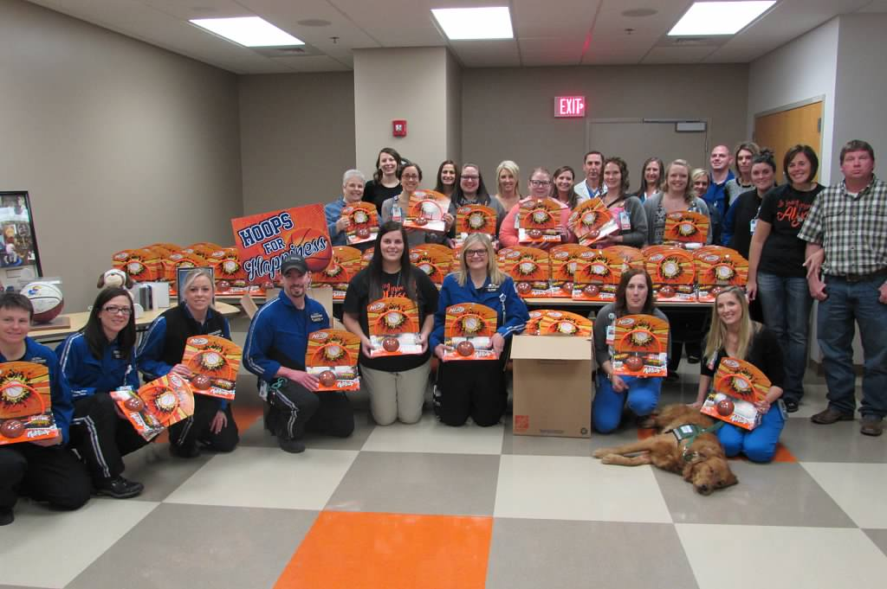
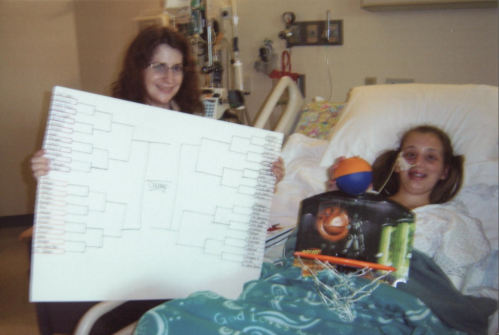
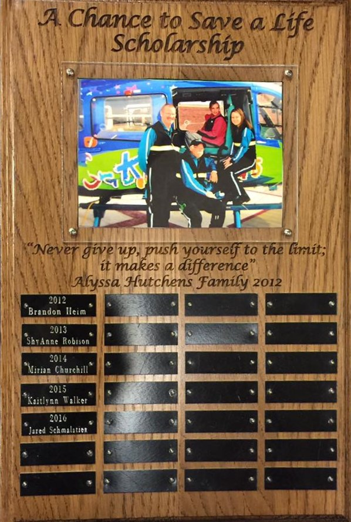
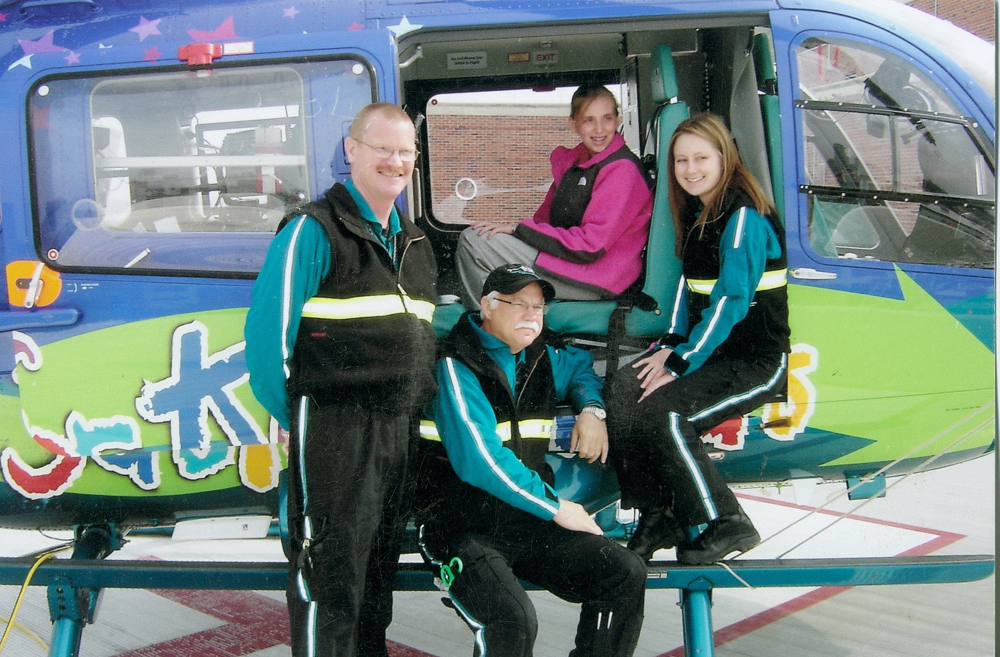
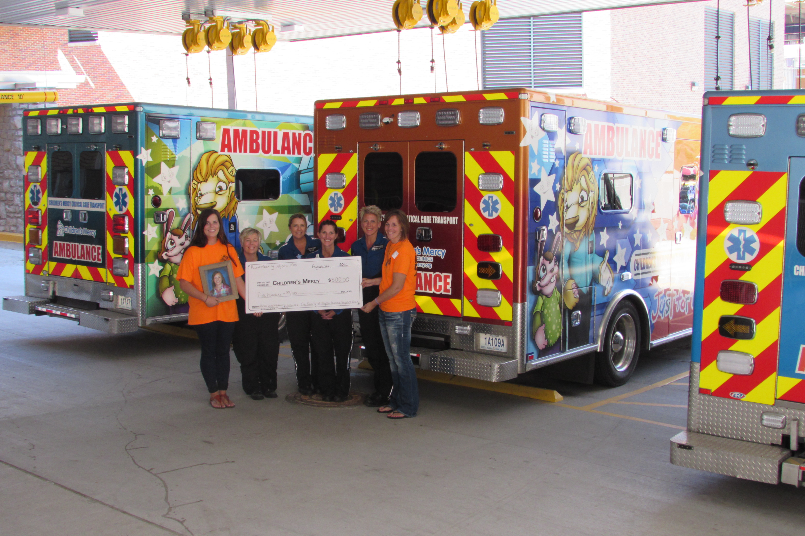
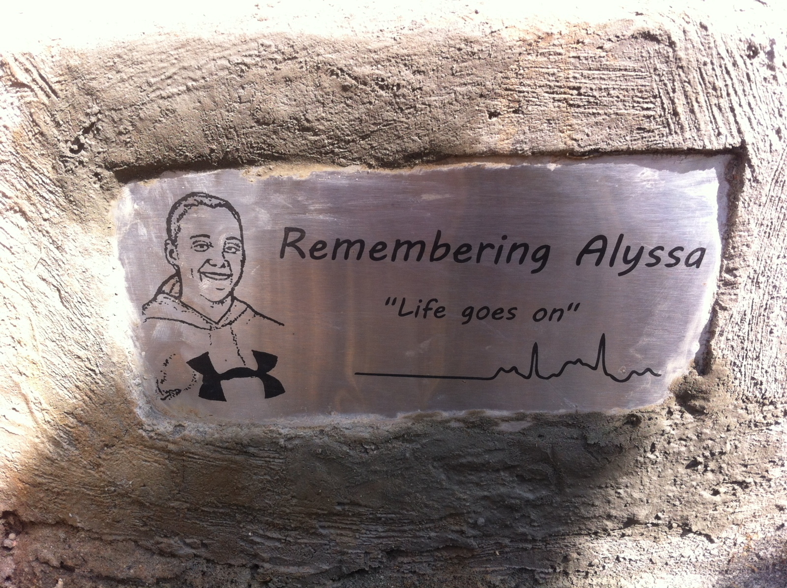
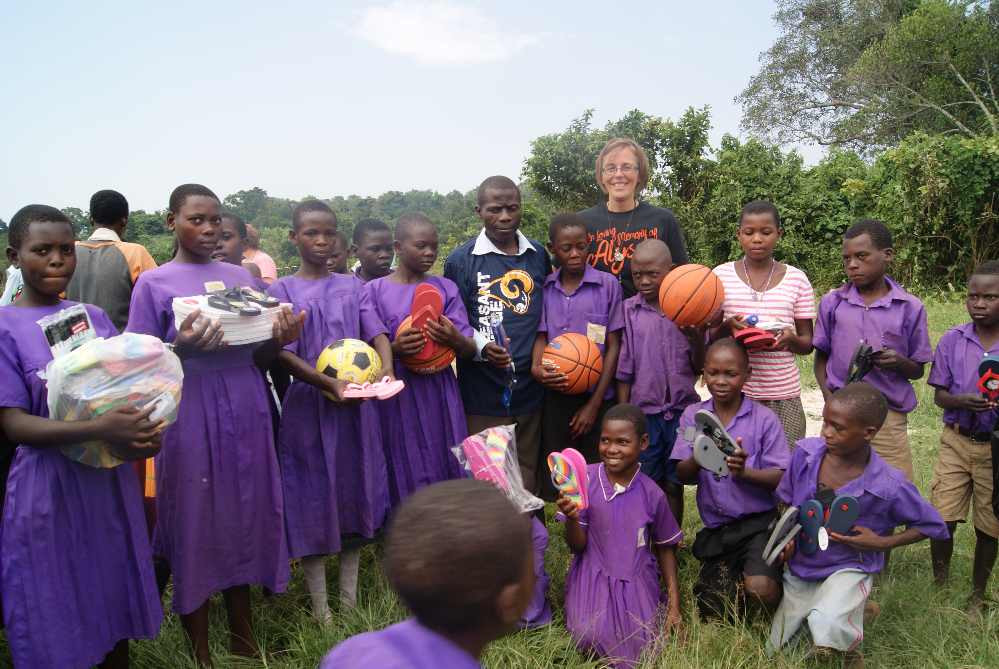

- DONATE
- News
- Events
- About Us


The Remembering Alyssa, Inc. public charity based in Easton, Kansas began after the sudden, unexpected loss of 16 year old Alyssa Hutchens. Alyssa loved the outdoors to include riding her 4-wheeler and enjoyed giving back to others. In her memory, her parents began an annual ATV ride to celebrate her life and make an impact through giving. We hope you will join us on this journey of creating a legacy of love.
Alyssa’s family attended Children’s Mercy in February 2016, where Alyssa was a patient and volunteer, and big sister Katelyn currently volunteers in the Child Life Department. The family learned about Child Life during Alyssa’s near death illness in February 2011. Child Life staff would come in and provide Alyssa with fun activities that brightened her day. Her family oversaw the immense impact Child Life made on Alyssa by touching her life which was very meaningful. Alyssa had such a love for basketball ever since she started walking. However, when she became ill her life drastically changed. Alyssa was undergoing physical and occupational therapy and Child Life provided her with a Nerf basketball hoop set and March Madness bracket for her hospital room. Alyssa enjoyed getting to play the sport she loved the most even if it meant laying in a hospital bed. Alyssa continued with therapy over the next few years and enjoyed the therapists always implementing basketball in her therapy sessions. Alyssa was re-admitted to the hospital in August 2014 at 16 years old with gastrointestinal medical issues. She was in isolation and confined to her hospital room. A Child Life Specialist met Alyssa and discussed her interests which included hunting and basketball. The Child Life Specialist stated they would find an activity based on her interests. Alyssa then looked at her mom and said, “Yeah right mom, they are not going to find anything for basketball and hunting for me in this hospital. Maybe if they let me leave this room and go outside.” The Child Life Specialist then surprised Alyssa with a Nerf basketball hoop set and a marshmallow gun with targets of animals. She was completely surprised and could not believe they actually had an activity for a 16 year old. Alyssa spent her day bedside doing what she loved most, shooting hoops. Alyssa sadly ended her life on November 10, 2014, after battling chronic medical issues. In her memory, Alyssa’s family wanted to carry on her love for basketball and her spirt of transforming lives through giving. What better way to bring a smile to those who are ill just like Alyssa was. You never saw Alyssa without a smile on her face. Her family decided to make a hospital experience more comfortable for children and create and implement Hoops for Happiness. This provides the Child Life Department with 100 Nerf basketball hoop sets per year which can be implemented as bedside activities or use in the playrooms. They decided to create and implement the project so patients can have fun and enjoy shooting hoops bedside just like Alyssa did. These can be used for patients who are in isolation or may be confined to their bed. They also thought about those patients who have a passion for sports just like Alyssa. Maybe shooting some hoops in the hospital will make them feel like they are doing something they love even though they can’t be out on the court or on the field. The Nerf basketball hoops can also be taken home with the patient after they are discharged for them to enjoy at home. This special donation from the Hutchens family came five years after Alyssa’s near death illness right before March Madness so what better way to celebrate. The First Annual Remembering Alyssa ATV Poker Run was held on June 18, 2016, and due to its success, the Child Life Department will now receive Nerf basketball hoops twice a year, in March just in time for March Madness and in September. The pet therapy dogs also receive their very own basketballs. This donation came just in time for the hospital’s March Madness/Big 12 Mascots visit. What a perfect fit! In addition, during Alyssa’s initial hospital stay, the physical and occupational therapists taught her to use  her hands again to write, eat, text and of course dribble the basketball. She had to relearn how to walk, jump, run and regain her strength. In memory of Alyssa, the Physical and Occupational Therapy Department receives sports equipment annually. The surprise donations were attended by wonderful staff that made a difference in the life of Alyssa in the Children’s Mercy Child Life Department, Critical Care Transport Team, Physical and Occupational Therapists, Volunteer Services, as well as doctors and nurses. We hope the Nerf basketball hoops and sports equipment touch several patients’ lives and make their hospital experience a better one just like Alyssa’s and her love for basketball.
her hands again to write, eat, text and of course dribble the basketball. She had to relearn how to walk, jump, run and regain her strength. In memory of Alyssa, the Physical and Occupational Therapy Department receives sports equipment annually. The surprise donations were attended by wonderful staff that made a difference in the life of Alyssa in the Children’s Mercy Child Life Department, Critical Care Transport Team, Physical and Occupational Therapists, Volunteer Services, as well as doctors and nurses. We hope the Nerf basketball hoops and sports equipment touch several patients’ lives and make their hospital experience a better one just like Alyssa’s and her love for basketball.
 Ronald McDonald Charities of Kansas City: During Alyssa’s near death illness in 2011 while in the Pediatric Intensive Care Unit (PICU), Alyssa’s family wasn’t allowed to spend the night in her room so they slept in the Ronald McDonald Family Room just down the hall for over 40 days. They had seven bedrooms and those rooms were issued each night based on the severity of the patient. After Alyssa was released from the hospital, she had extensive physical and occupational therapy every day, along with several doctor’s appointments. Her family lived over an hour away from the hospital, so they were able to stay at the Ronald McDonald House across the street from the hospital. Alyssa and her parents stayed at the Ronald McDonald House for several days at a time for about three months. During that time, the Hutchens family learned all about the importance of the Ronald McDonald House. In fact, Alyssa wanted to “give back” to the Ronald McDonald House for taking care of her parents while she was hospitalized. While staying at the Ronald McDonald House, she learned about collecting pop tabs and recycling. The proceeds from recycling the pop tabs help pay the bills and house operations to support the families who stay at the houses and Family Room at Children’s Mercy. So in 2011, Alyssa, along with the help of her community, began collecting pop tabs for Ronald McDonald Charities of Kansas City. She wanted to continue to “give back” so she contacted them and asked them what else she could do to help. Since she was already collecting pop tabs, they told her they also recycle loose keys. In February 2013, Alyssa began collecting loose keys for her 4-H Leadership project. She got together with some of her friends who helped get her project off to a strong start! All those keys in your drawers and boxes…..keys that you wonder what they once opened….keys that you are sure you will need, but when???? This is where she needed help. The loose keys would be
Ronald McDonald Charities of Kansas City: During Alyssa’s near death illness in 2011 while in the Pediatric Intensive Care Unit (PICU), Alyssa’s family wasn’t allowed to spend the night in her room so they slept in the Ronald McDonald Family Room just down the hall for over 40 days. They had seven bedrooms and those rooms were issued each night based on the severity of the patient. After Alyssa was released from the hospital, she had extensive physical and occupational therapy every day, along with several doctor’s appointments. Her family lived over an hour away from the hospital, so they were able to stay at the Ronald McDonald House across the street from the hospital. Alyssa and her parents stayed at the Ronald McDonald House for several days at a time for about three months. During that time, the Hutchens family learned all about the importance of the Ronald McDonald House. In fact, Alyssa wanted to “give back” to the Ronald McDonald House for taking care of her parents while she was hospitalized. While staying at the Ronald McDonald House, she learned about collecting pop tabs and recycling. The proceeds from recycling the pop tabs help pay the bills and house operations to support the families who stay at the houses and Family Room at Children’s Mercy. So in 2011, Alyssa, along with the help of her community, began collecting pop tabs for Ronald McDonald Charities of Kansas City. She wanted to continue to “give back” so she contacted them and asked them what else she could do to help. Since she was already collecting pop tabs, they told her they also recycle loose keys. In February 2013, Alyssa began collecting loose keys for her 4-H Leadership project. She got together with some of her friends who helped get her project off to a strong start! All those keys in your drawers and boxes…..keys that you wonder what they once opened….keys that you are sure you will need, but when???? This is where she needed help. The loose keys would be  donated and delivered to the Ronald McDonald House Charities in Kansas City to be recycled at a local recycling center. This is a "win-win" project because it is recycling to help our environment and also recycling to raise money for a great cause! Alyssa’s goal was to collect 2000 keys or about 50 pounds. Her final results: 7,495 keys and 152 pounds, 13 ounces. She delivered the keys to the Ronald McDonald House and then they were taken to the recycling center where the Ronald McDonald House received $274.23 for the keys. After Alyssa’s successful project, she decided to become a Ronald McDonald House Volunteer. She wanted to accompany Alan and conduct school presentations promoting the collection of pop tabs and keys. In August 2013, Alyssa conducted school presentations as part of her 4-H Leadership project. While conducting school presentations around Leavenworth County, she came up with the idea of rewarding the class who collected the most pop tabs and keys with ice cream treats from McDonalds. Those school districts consisted of Leavenworth, Lansing and Basehor. The final results: 2077 keys were collected and 269 pounds of pop tabs for the school year ending May 2014. Just six months later, Alyssa unexpectedly passed away but the donations of pop tabs and keys still keep coming in memory of Alyssa, nothing has stopped. Let’s keep Alyssa’s dream alive by continuing to collect pop tabs and keys for the Ronald McDonald House. In fact, Alyssa was so special, she has a bedroom in her name in the new Wylie Ronald McDonald House. This allows families with hospitalized children to be close to each other. After the First Annual Alyssa’s ATV Ride proved popular, a portion of the proceeds were donated to the Ronald McDonald House for Alyssa’s bedroom for those families who are not able to pay the requested $10 donation per night to stay at no cost. They have a sick or injured child in the hospital and the last thing they need to worry about is coming up with money for a hot meal and a place to lay their heads.
donated and delivered to the Ronald McDonald House Charities in Kansas City to be recycled at a local recycling center. This is a "win-win" project because it is recycling to help our environment and also recycling to raise money for a great cause! Alyssa’s goal was to collect 2000 keys or about 50 pounds. Her final results: 7,495 keys and 152 pounds, 13 ounces. She delivered the keys to the Ronald McDonald House and then they were taken to the recycling center where the Ronald McDonald House received $274.23 for the keys. After Alyssa’s successful project, she decided to become a Ronald McDonald House Volunteer. She wanted to accompany Alan and conduct school presentations promoting the collection of pop tabs and keys. In August 2013, Alyssa conducted school presentations as part of her 4-H Leadership project. While conducting school presentations around Leavenworth County, she came up with the idea of rewarding the class who collected the most pop tabs and keys with ice cream treats from McDonalds. Those school districts consisted of Leavenworth, Lansing and Basehor. The final results: 2077 keys were collected and 269 pounds of pop tabs for the school year ending May 2014. Just six months later, Alyssa unexpectedly passed away but the donations of pop tabs and keys still keep coming in memory of Alyssa, nothing has stopped. Let’s keep Alyssa’s dream alive by continuing to collect pop tabs and keys for the Ronald McDonald House. In fact, Alyssa was so special, she has a bedroom in her name in the new Wylie Ronald McDonald House. This allows families with hospitalized children to be close to each other. After the First Annual Alyssa’s ATV Ride proved popular, a portion of the proceeds were donated to the Ronald McDonald House for Alyssa’s bedroom for those families who are not able to pay the requested $10 donation per night to stay at no cost. They have a sick or injured child in the hospital and the last thing they need to worry about is coming up with money for a hot meal and a place to lay their heads.
A Chance to Save a Life Scholarship was created in 2012 by Alyssa Hutchens during her recovery from her 2011 illness. Her family knows first-hand how much time and effort, including education, goes into becoming a healthcare provider. This is a way to help young people who may not otherwise have the financial support to carry out their dreams of assisting others. Before Alyssa’s illness, she had always wanted to become a Nurse. Then she decided she wanted to become a Critical Care Life flight Nurse at Children’s Mercy. It was now her turn to have a chance to save a life.
Her family agrees the Critical Care Transport Team, Pediatric Intensive Care Unit doctors and nurses, specialists, and physical and occupational therapists saved Alyssa’s life. Sometimes it takes personal experiences or something bad happening to someone close to you, especially to someone so young and full of life, for you to realize where your heart really is. It is the strength and willpower it takes of a special person to help others. A Chance to Save a Life Scholarship is awarded to a Pleasant Ridge High School Senior planning to pursue a degree in a healthcare field. The student must have a minimum gpa of 3.0 and submit a resume, transcript and essay which includes: Why are you pursuing a degree in the healthcare field? Why do you feel you would be a good contributor to the healthcare field? Applications become available every February.
Alyssa Lane Hutchens Family Memorial Scholarship: Alyssa was 16 years old and a Junior at Pleasant Ridge High School when she unexpectedly passed away on November 10, 2014. Alyssa had been a student in the Easton School district since Kindergarten. Alyssa enjoyed her friendships with everyone, but mostly the Class of 2016. Alyssa’s happiest times were spending time with friends, playing sports, and volunteering her time. Her family knows she would feel blessed and honored for another student to strive forward. Her family is not telling you about their loss, but to remember and honor her life. Each person is unique; and each person is blessed with gifts (talents), abilities, and personality strengths. When giving our gifts to others, we are all enriched and as a community we grow in strength. The gift of giving a scholarship is to recognize an individual who gives the gift of themselves in some way that strengthens those around them and the community to which they belong. Therefore, Alyssa’s family created the Alyssa Lane Hutchens Family Memorial Scholarship. This scholarship is awarded to a Pleasant Ridge High School Senior athlete who played at least two years of high school sports and has a minimum gpa of 3.0. The student must provide the following information: high school sports and years participated, awards received during high school, community service involvement, and scholarships currently received. They must submit a transcript and essay which includes: Tell us about yourself and who has inspired you? What degree do you plan to pursue in your two year/four year plan? Applications become available every February.
Alyssa Lane Hutchens Critical Care Transport Scholarship: Alyssa’s family was first introduced to Children’s Mercy Critical Care Transport in February 2011 when their 13 year old little girl, Alyssa Lane Hutchens, contracted H1N1 Influenza, accompanied by strep and pneumonia. She was taken by ambulance to her local hospital emergency room and then they contacted Children’s Mercy for ambulance transport. After Children’s Mercy received the call, pilot (John) had a “gut feeling” about this girl and decided to get his crew (Bill and Emily) and they flew to get Alyssa. Alyssa was life-flighted to Children’s Mercy by the Critical Care Transport Team, where she lost consciousness en route. Alyssa’s parents know their “gut feeling” saved Alyssa’s life that day and she would not have made it without them. Alyssa spent 43 days in the Adelaide C. Ward Pediatric Intensive Care Unit where the transport team became family to Alyssa and her family, stopping by Alyssa’s room nearly every day checking on her. Following Alyssa’s recovery, she decided she wanted to become a Critical Care Transport Nurse. She begged her mom to talk to someone at Children’s Mercy to let her volunteer in Critical Care Transport so she could see first-hand what they do behind the scenes. In the summer of 2014, Alyssa became a committed Critical Care Transport Volunteer with the dream of becoming a Critical Care Transport Nurse. After the first day, she was in!!!! Then she learned she had to have experience in the Pediatric Intensive Care Unit and she said, “Mom, I got this. Dr. Allen was my doctor in the PICU. When I talked to him the last time I visited, he told me when I was ready to come back for a job, just to let him know. I will go see him when I am almost ready to graduate from college. I know he will hook me up.” Alyssa was readmitted to Children’s Mercy in August 2014, shortly after completing her summer volunteer program. She spent three weeks in the hospital and was then referred to Nationwide Children’s Hospital in Ohio but not until November 19. Alyssa took her life on November 10, 2014, at the age of 16, but not before leaving a note with specifics: I want you to donate all of my money to TRANSPORT!! There was one thing perfectly clear to Alyssa’s family, in her final minutes she was thinking about those who had once saved her life.
Alyssa hated to shop, she never spent money. She was a saver, unlike her sister. Alyssa had a savings account that was opened when she was born and she never spent a dime. Any time she received money, whether it was for her birthday, babysitting, working or selling her 4-H animals, it all went into her savings account. Her goal was to pay for her first year of college without the help of mom and dad. A few months after her family presented the Critical Care Transport Team with Alyssa’s funeral memorial funds and savings, granting their daughter’s wishes, they received a telephone call from the Transport Team Coordinator. She said they could use the funds towards a new piece of equipment in the helicopter or ambulance; however, a piece of equipment just wears out over time and eventually has to be repaired, replaced and then just goes away. They would rather put it towards something that stays alive and keeps on giving just as Alyssa would have done. This is how Alyssa’s family came up with the Alyssa Lane Hutchens Critical Care Transport Scholarship. The scholarship is awarded to a professional currently working with the Critical Care Transport Program who would like to expand their education to benefit the Critical Care Transport Program at Children’s Mercy. The recipient shall be an individual pursuing an undergraduate or graduate degree in Nursing, Respiratory Therapy, Paramedics or EMT. You don’t know how special Alyssa’s family felt that the Transport department actually took the time and put thought into such a precious gift their family, community and daughter had left them. Alyssa thought of the Critical Care Transport Department as her second family. She will never get the chance to walk through the doors of Children’s Mercy as a Transport Nurse and pursue that dream she had worked so hard for. But Alyssa’s dream will live on by supporting those who are passionate about and believe in the advancement of Critical Care Transport through the Alyssa Lane Hutchens Critical Care Transport Scholarship.
Alyssa’s dream was to travel to Africa. For her senior graduation present, she didn’t want money or gifts. All she wanted was to take a family vacation to Africa to go on a safari to see zebras, rhinos and all types of wildlife. During Alyssa’s last hospital stay, she shared plans from her hospital bed with her mother to visit Uganda and the children impacted by wells built in memory of her cousin, Jesse Parker. Sadly, Alyssa lost her battle with a chronic illness before she could reach Africa. Little does she know, a piece of her now remains in Uganda, Africa, and she is transforming lives. Through an anonymous donation, a well was drilled in honor of Alyssa in the village of Nsozibyre, in rural Uganda. Before this well, children walked several miles down steep terrain to collect water in a muddy hole. With the opening of Alyssa’s well, more than 2176 people now have access to clean water for the first time in their lives, including Bongole Primary School that serves more than 600 children. A small plaque adorns the well with a sketch of Alyssa’s smiling face and heartbeat EKG captured during her near-death illness in 2011. Lives are being changed beyond the borders of Kansas through clean safe drinking water in Uganda, Africa. But the giving doesn’t stop there.
Alyssa was a junior at Pleasant Ridge High School and a member of the Student Council and Leadership Team. The students knew Alyssa was a very giving person, always volunteering and never expecting anything in return. After the students found out the children in Uganda walked miles every day to get water, they decided to conduct a shoe drive for three reasons. First, because the children needed shoes for their poor little feet. Second, because Alyssa had a shoe fetish. She had to have shoes in every single color!! And third, the poor little children in Africa had a horrible problem with jiggers in their feet. The students in Alyssa’s high school researched this problem and decided to conduct “Operation Shoe Drive” throughout the school district. This would provide slightly used shoes to change lives for the families in the village of Nsozibirye, the site of Alyssa’s well in Uganda Africa.
The word spread like wildfire. It went beyond the schools. It spread throughout the entire community. Alyssa’s family began finding shoes dumped on their doorsteps. Families began bringing shoes to her family at church. People would bring shoes to Alyssa’s family members and ask them to see that they received them. The response to this shoe drive was overwhelming. This was just asking for a simple pair of shoes to protect a little child’s little feet while they traveled miles for water….A gesture that melts hearts and brings tears to your eyes every time a pair of shoes was dropped off at their door. Collection boxes were set up at the schools in the district. The students had no idea they would collect so many shoes for those unprivileged families in another country. In addition, students collected and donated school supplies for those students attending Bongole Primary School. Their support is giving life to many other kids in need.